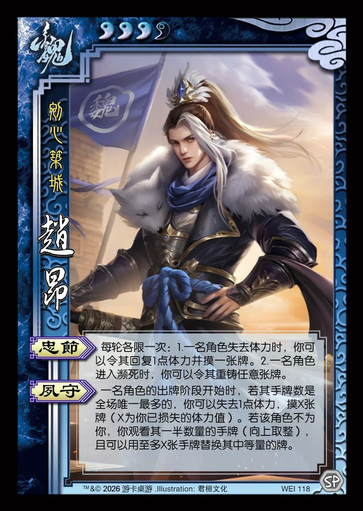

点击卡面查看大图
魏
赵昂
♥3/4剜心筑城
忠节
每轮各限一次：1.一名角色失去体力时，你可以令其回复1点体力并摸一张牌。2.一名角色进入濒死时，你可以令其重铸任意张牌。
夙守
一名角色的出牌阶段开始时，若其手牌数是全场唯一最多的，你可以失去1点体力，摸X张牌（X为你已损失的体力值）。若该角色不为你，你观看其一半数量的手牌（向上取整），且可以用至多X张手牌替换其中等量的牌。

点击卡面查看大图
剜心筑城
每轮各限一次：1.一名角色失去体力时，你可以令其回复1点体力并摸一张牌。2.一名角色进入濒死时，你可以令其重铸任意张牌。
一名角色的出牌阶段开始时，若其手牌数是全场唯一最多的，你可以失去1点体力，摸X张牌（X为你已损失的体力值）。若该角色不为你，你观看其一半数量的手牌（向上取整），且可以用至多X张手牌替换其中等量的牌。